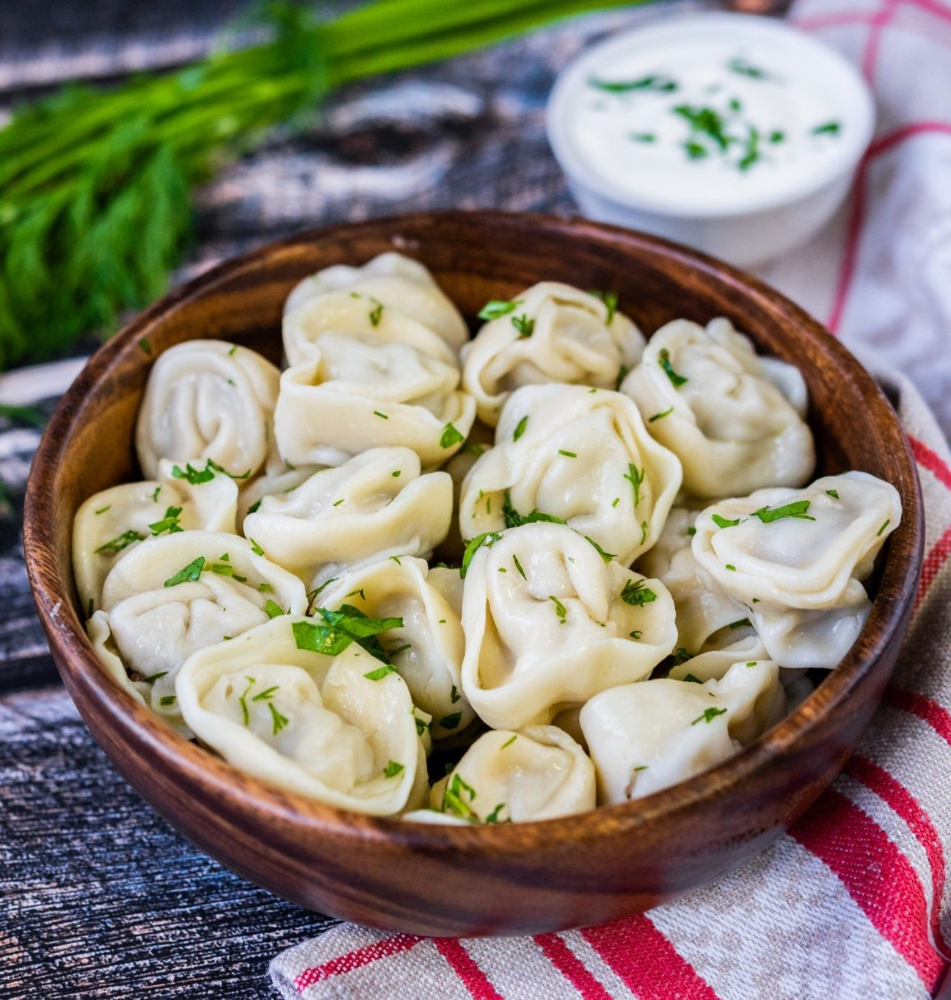
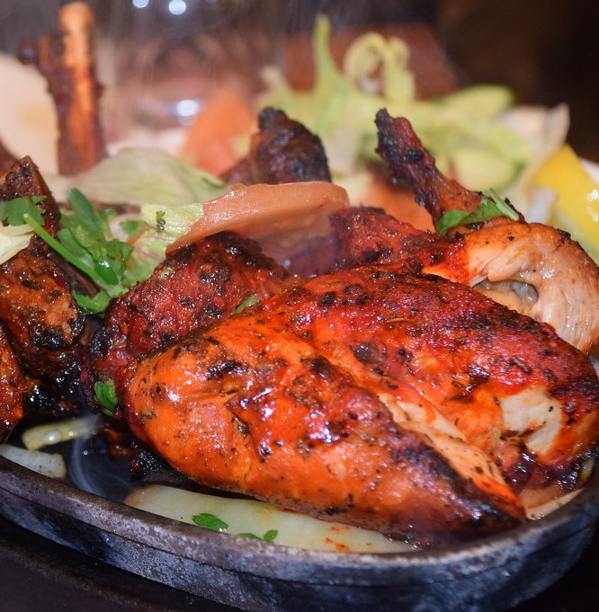
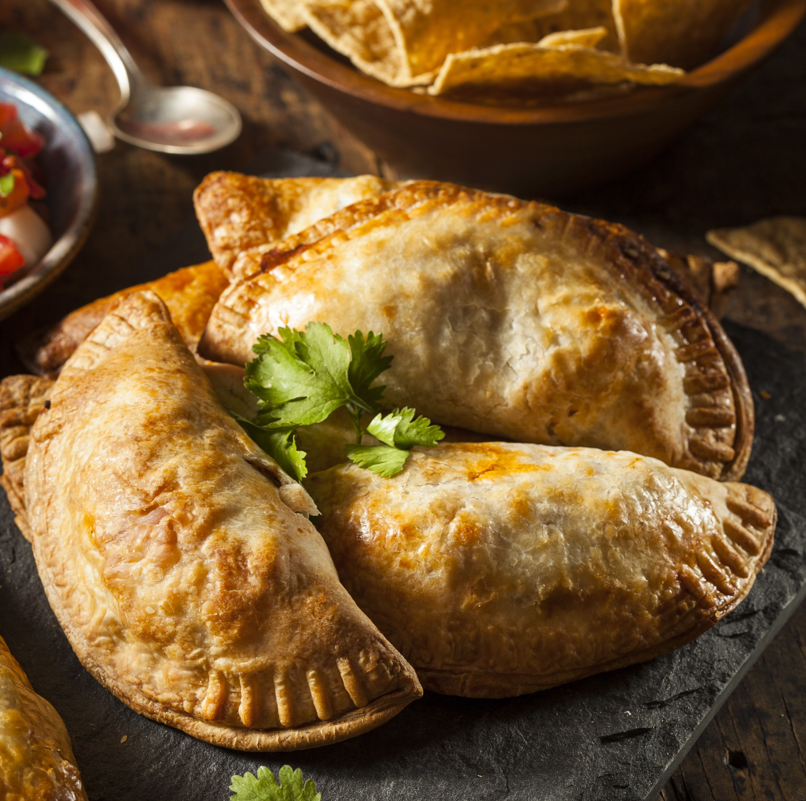

01
Что может быть лучше?
Пельмени, Россия
Одна из первых ассоциаций, возникающих при упоминании русской кухни, конечно же, пельмени. Блюдо из пресного теста с начинкой из рубленого мяса не отказался бы попробовать ни один иностранец, мечтающий однажды доехать до необъятной России.
Рецепт →

02
Интересное сочетание вкусов!
Цыплята тандури, Индия
Родиной этого острого блюда из птицы считается индийский штат Пенджаб. Оттуда курица тандури распространилась по всей Индии. Перед приготовлением курицу маринуют в йогурте с различными специями, после чего запекают в специальной печи тандури.
Рецепт →

03
В дорогу, самое то!
Эмпанада, Чили
Пирожок с различными начинками популярен во всей Латинской Америке. В чили же это блюдо считается национальным. Классический пирожок начиняют мелко нарезанной говядиной с луком и оливками.
Рецепт →
